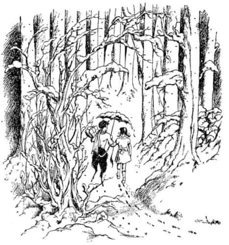
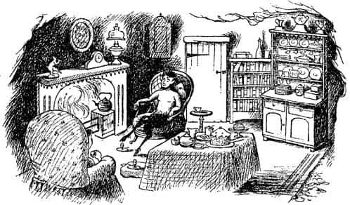
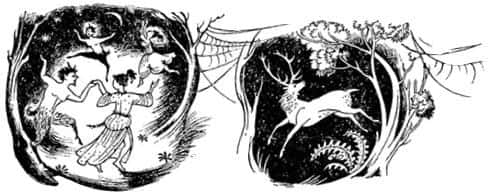
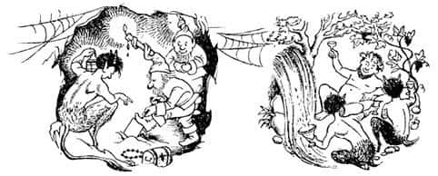
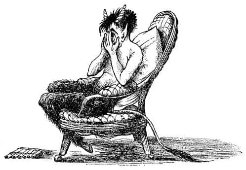
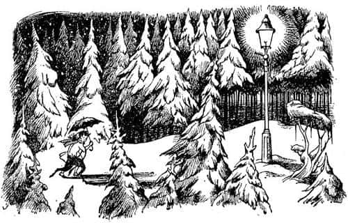

Lucy’nin Dolapta Buldukları
“Pekâlâ Havvakızı Lucy” dedi Bay Tumnus, “Narnia’ya nasıl geldiğini sorabilir miyim?”
“Narnia mı? O da ne?” dedi Lucy.
“Burası Narnia ülkesi” dedi Faun, “lamba direğiyle Doğu Denizi kıyısındaki büyük Cair Paravel Kalesi arasında, üzerinde bulunduğumuz tüm bu topraklar. Sen – sen batının vahşi ormanlarından mı geldin?”
“Ben – ben boş odadaki giysi dolabından geçerek geldim” dedi Lucy.
“Ah!” dedi Bay Tumnus epeyce melankolik bir sesle. “Küçük bir Faun’ken coğrafyaya daha fazla çalışmış olsaydım, kuşkusuz o garip ülkeler hakkındaki her şeyi bilirdim. Şimdi artık çok geç.”
“Fakat bunlar ülke değil ki” dedi Lucy, gülümseyerek. “Hemen şuracıkta – en azından – emin değilim. Orada şimdi yaz mevsimi.”

“Bu arada” dedi Bay Tumnus, “Narnia’da mevsim kış ve çok uzun süredir de böyle; burada karda dikilip konuşmaya devam edersek ikimiz de nezleye yakalanacağız. Uzaklardaki ‘Boşoda’ ülkesinde, sonsuz yazın hüküm sürdüğü aydınlık ‘Giysido Labı’ şehrinden olan Havvakızı, benimle gidip bir çay içmeye ne dersin?”
“Çok teşekkürler Bay Tumnus” dedi Lucy. “Fakat geri dönmemin gerekip gerekmediğini düşünüyordum.”
“Hemen şuracıkta” dedi Faun “ve gürül gürül ateş yanıyor, – tost – sardalye – ve kek de var.”
“Çok naziksiniz” dedi Lucy. “Ama uzun süre kalamam.”
“Koluma girersen eğer, Havvakızı” dedi Bay Tumnus, “şemsiyeyi ikimizin başı üzerinde tutabilirim. Evet böyle. Haydi gidelim.”

Ve böylece Lucy, sanki birbirlerini eskiden beri tanırlarmış gibi, kendini bu tuhaf yaratıkla ormanda kol kola yürürken buldu.
Çok fazla yol almamışlardı ki zemini düzgün olmayan ve her yerde kayaların, sağda solda küçük tepelerin olduğu bir yere geldiler. Küçük bir koyağın dibinde Bay Tumnus aniden dönerek, sanki çarpacakmış gibi, görülmedik kadar büyük bir kayaya doğru yürüdü. Lucy, son anda bir mağaranın girişine doğru yöneldiklerini anladı. İçeriye girer girmez kendini bir ateşin karşısında buldu. Sonra Bay Tumnus eğilerek, zarif bir maşayla ateşten, yanan bir odun parçası aldı ve lambayı yaktı. “Fazla uzun sürmez” dedi ve hemen çaydanlığı ateşe koydu.

Lucy bundan daha şirin bir yerde hiç bulunmadığını düşünüyordu. Küçük, kuru, kırmızımsı bir taştan temiz bir mağaraydı. Yerde bir halı, iki küçük sandalye (“biri benim diğeri de bir dost için” dedi Bay Tumnus) ve bir masa, bir büfe, ateşin üzerinde bir şömine rafı ve onun da üzerinde kır sakallı yaşlı bir Faun’un resmi vardı. Bir köşede, Lucy’nin Bay Tumnus’un yatak odasına açıldığını düşündüğü bir kapı göze çarpıyordu ve duvarlardan birinde, bir sürü kitabın yer aldığı bir raf vardı. Bay Tumnus çay malzemelerini hazırlarken Lucy bunlara bakıyordu. Kitaplar, Silenus’un Hayatı ve Mektupları, Su Perileri ve Alışkanlıkları, ya da İnsanlar, Rahipler ve Bekçiler; Halk Masalları Üzerine Bir Çalışma ya da İnsan Bir Mit midir? gibi isimler taşıyordu.

“Hazırız, Havvakızı!” dedi Faun.
Bu gerçekten harika bir çaydı. Her ikisi için de birer rafadan yumurta, kızarmış ekmek üzerinde sardalye, sonra ballı kızarmış ekmek, tereyağlı kızarmış ekmek ve üzerinde şeker olan bir kek vardı. Lucy artık yemekten yorulduğunda Faun konuşmaya başladı. Ormandaki yaşam hakkında harika hikâyeler anlattı. Gece yarısı dans partilerini ve kuyularda yaşayan su perilerinin ve ağaçlarda yaşayan orman perilerinin nasıl Faunlar’la dans etmek için ortaya çıktıklarını; eğer yakalarsan dileklerini yerine getiren süt beyazı geyiği avlama partilerini; eğlence partilerini ve ormanın zemininin altında, çok derinlerdeki mağara ve maden ocaklarında yabanıl kızıl cücelerle birlikte yaptıkları hazine avcılığını; ağaçların yemyeşil olduğu yazı ve yaşlı Silenus’un şişko eşeğiyle onları ziyarete gelişini, bazen Baküs’ün* gelişini ve o zaman derelerden su yerine şarap akışını ve tüm ormanın haftalarca neşeye boğuluşunu anlattı. “Ne yazık ki şimdi hep kış” diye ekledi kasvetle. Sonra neşelenmek için, büfenin üzerindeki kılıfından, kamıştan yapılmış gibi görünen garip küçük bir flüt çıkardı ve çalmaya başladı. Çaldığı melodi yer yer Lucy’de ağlamak, gülmek, dans etmek ve uyumak isteği uyandırıyor, hem de hepsini bir arada yapmak istemesine neden oluyordu. Lucy kendine geldiğinde saatler geçmiş olmalıydı.

“Oh, Bay Tumnus – kestiğim için özür dilerim, çok da sevmiştim şarkınızı – fakat gerçekten eve dönmem gerekiyor. Sadece birkaç dakika kalmak istemiştim burada” dedi.
“Çok geç artık, biliyorsun” dedi Faun flütünü bırakıp başını üzgünce ona doğru sallayarak.
“Çok mu geç?” dedi Lucy, sıçrayarak ve artan bir korkuyla. “Ne demek istiyorsun? Hemen eve dönmem gerekiyor. Diğerleri başıma ne geldiğini merak ederler.” Ancak daha sonra “Bay Tumnus, sorun nedir?” diye sordu, çünkü Faun’un kahverengi gözleri yaşlarla dolmuştu, sonra gözyaşları yanaklarından aşağı süzülmeye ve sonra da burnunun ucundan damlamaya başladı. O zaman Faun yüzünü elleriyle kapatıp inledi.
“Bay Tumnus, Bay Tumnus!” dedi Lucy, üzüntüyle. “Ağlamayın! Ağlamayın! Sorun nedir? İyi değil misiniz? Sevgili Bay Tumnus, söyleyin neyiniz var?” Fakat Faun sanki yüreği sökülürcesine hıçkırarak ağlamaya devam ediyordu. Lucy yaklaşıp kollarıyla onu sarmaladığında ve mendilini ona verdiğinde bile ağlaması kesilmemişti. Yalnızca mendili alıp, tamamen ıslandığında iki eliyle sıkarak, kullanmaya devam etmişti. Bu nedenle Lucy ıslak bir zeminde dikilmekteydi.
“Bay Tumnus!” diye haykırdı Lucy Faun’un kulağına, onu sarsarak. “Kesin şunu! Hemen kesin! Kendinizden utanmanız gerek, sizin gibi büyük, muhteşem bir Faun… Neden ağlıyorsunuz Allah aşkına?”
“Oh – oh – oh!” diye hıçkırdı Bay Tumnus, “Çok kötü bir Faun olduğum için ağlıyorum.”
“Asla kötü bir Faun olduğunuzu sanmıyorum ben” dedi Lucy. “Çok iyi bir Faun’sunuz siz. Tanıdığım en iyi Faun’sunuz.”
“Oh – oh – eğer bilseydin böyle konuşmazdın” diye cevapladı Bay Tumnus hıçkırıklar arasında. “Hayır, ben kötü bir Faun’um. Dünya yaratıldığından beri daha kötü bir Faun’un yaşadığını sanmıyorum.”
“Fakat ne yaptınız ki?” diye sordu Lucy.
“Benim yaşlı babam” dedi Bay Tumnus, “şöminenin üzerindeki fotoğraf onun fotoğrafı. Böyle bir şeyi asla yapmazdı.”
“Neyi yapmazdı?” dedi Lucy.
“Benim yaptığımı” dedi Faun. “Beyaz Cadı’nın hizmetçisi olmazdı. Ben öyleyim işte. Beyaz Cadı’nın hizmetinde çalışıyorum.”
“Beyaz Cadı mı? O da kim?”
“Kim mi? Tüm Narnia’yı parmağında oynatan biri o. Sürekli kışı getiren o. Sürekli kış, ama asla Noel gelmiyor; düşün bir kere!”
“Ne kötü!” dedi Lucy. “Ama sana ne için para veriyor?”
“En kötü yanı da bu” dedi Bay Tumnus derin bir iniltiyle. “Ben onun için adam kaçırıyorum, işte ben böyle biriyim. Bana bak Havvakızı. Benim, ormanda bana hiçbir zararı dokunmamış zavallı masum bir çocukla karşılaşıp, ona dostça davranarak, mağaradaki evime davet edip uyuşturarak uyuttuktan sonra Beyaz Cadı’ya teslim etmek amacında olan bir Faun olduğuma inanır mısın?”
“Hayır” dedi Lucy. “Eminim böyle bir şey yapmazsın.”
“Fakat ben yaptım” dedi Faun.
“Şey” dedi Lucy yavaşça (çünkü doğruyu söylemek, ama Faun’u da incitmemek istiyordu), “bu çok kötü. Fakat bundan dolayı öyle üzgünsün ki eminim bir daha yapmazsın.”
“Havvakızı, anlamıyor musun?” dedi Faun. “Bu benim geçmişte yaptığım bir şey değil. Şimdi, şu anda yapmakta olduğum bir şey.”
“Ne demek istiyorsun?” dedi Lucy bembeyaz kesilerek.
“O çocuk sensin” dedi Bay Tumnus. “Eğer ormanda bir Havvakızı ya da Âdemoğlu görürsem onları yakalayıp Beyaz Cadı’ya teslim etmek için emir aldım. Ve karşılaştığım ilk insan sensin. Dostunmuş gibi davranıp seni çaya davet ettim, tüm bu zaman boyunca ona haber vermek için senin uyumanı bekliyordum.”
“Oh, ama bunu yapmayacaksın, Bay Tumnus” dedi Lucy. “Yapmayacaksın değil mi? Gerçekten, gerçekten yapmamalısın.”
“Ama yapmazsam” dedi yine ağlamaya başlayarak, “eminim öğrenir. Ve kuyruğumu kestirir, boynuzlarımı kırdırır, sakallarımı yoldurur ve asasını benim güzel çatal tırnaklı toynaklarımın üzerinde sallayıp onları sefil atlarınki gibi çirkin toynaklara dönüştürür. Eğer çok öfkeliyse beni taşa dönüştürür ve ben Cair Paravel’deki dört taht sahibini bulana dek – bunun ne zaman olacağını, ya da olup olmayacağını Allah bilir – onun korkunç evinde bir Faun heykeli olarak kalırım.”
“Çok üzgünüm Bay Tumnus” dedi Lucy. “Ama lütfen eve dönmeme izin verin.”
“Elbette vereceğim” dedi Faun. “Elbette vermem gerek. Bunu şimdi anlıyorum. Seninle karşılaşmadan önce insanların nasıl olduğunu bilmiyordum. Elbette seni Cadı’ya teslim edemem; hele seni tanıdıktan sonra. Fakat hemen gitmemiz gerek. Ben seni lamba direğine kadar götüreceğim. Sanırım sen oradan Boşoda ve Giysido Labı’nın yolunu bulabilirsin.”
“Eminim bulabilirim” dedi Lucy.
“Elimizden geldiğince sessizce gitmeliyiz” dedi Bay Tumnus. “Bütün orman onun casuslarıyla dolu. Bazı ağaçlar bile ondan yana.”
İkisi de çay malzemelerini masada bırakıp ayağa kalktılar. Bay Tumnus bir kez daha şemsiyesini açıp Lucy’yi koluna aldı ve dışarıda yağan kara çıktılar. Dönüş yolculuğu, asla Faun’un mağarasına gittikleri yolculuk gibi değildi; hiç konuşmadan olabildiğince çabuk yürüyorlardı ve Bay Tumnus en karanlık yolu tercih ediyordu. Yeniden lamba direğine ulaştıklarında Lucy rahatlamıştı.

“Buradan öteye nasıl gideceğini biliyor musun Havvakızı?” dedi Tumnus.
Lucy ağaçların arasına dikkatle baktı ve uzakta gün ışığına benzeyen bir pırıltıyı güçlükle seçebildi. “Evet” dedi, “Giysi dolabını görebiliyorum.”
“Öyleyse gidebildiğin kadar hızla dön evine” dedi Faun, “ve – sana yapmak istediğim şeyden dolayı beni affedebilecek misin?”
“Elbette affedeceğim” dedi Lucy onun elini içtenlikle sıkarak. “Umarım benim yüzümden başın belaya girmez.”
“Elveda Havvakızı” dedi Faun. “Mendilin bende kalabilir mi?”
“Tabii” dedi Lucy ve sonra bacaklarının dayanabileceği kadar hızla günışığı pırıltısına doğru koştu. Az sonra ağaçların yerine paltoları ve ayaklarının altında kıtırtılı karların yerine tahtaları hissetti ve aniden kendini, dolaptan, bütün bu maceranın başladığı boş odaya atlarken buldu. Dolabın kapısını sıkıca arkasından kapattı ve soluk soluğa etrafa bakındı. Hâlâ yağmur yağıyordu ve diğerlerinin koridordan gelen seslerini duyuyordu.
“Buradayım” diye bağırdı. “Buradayım. Geri döndüm, iyiyim.”
* Şarap tanrısı.